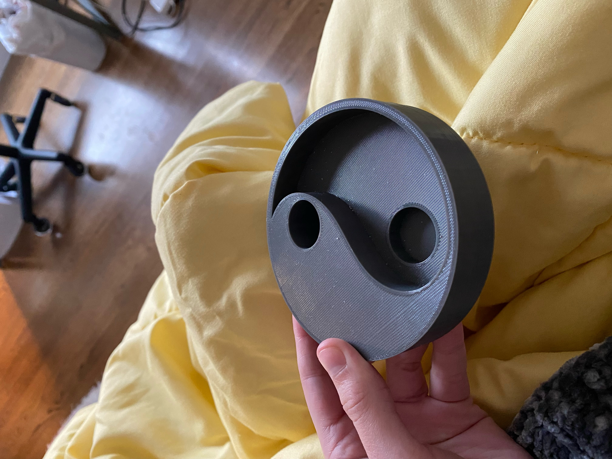
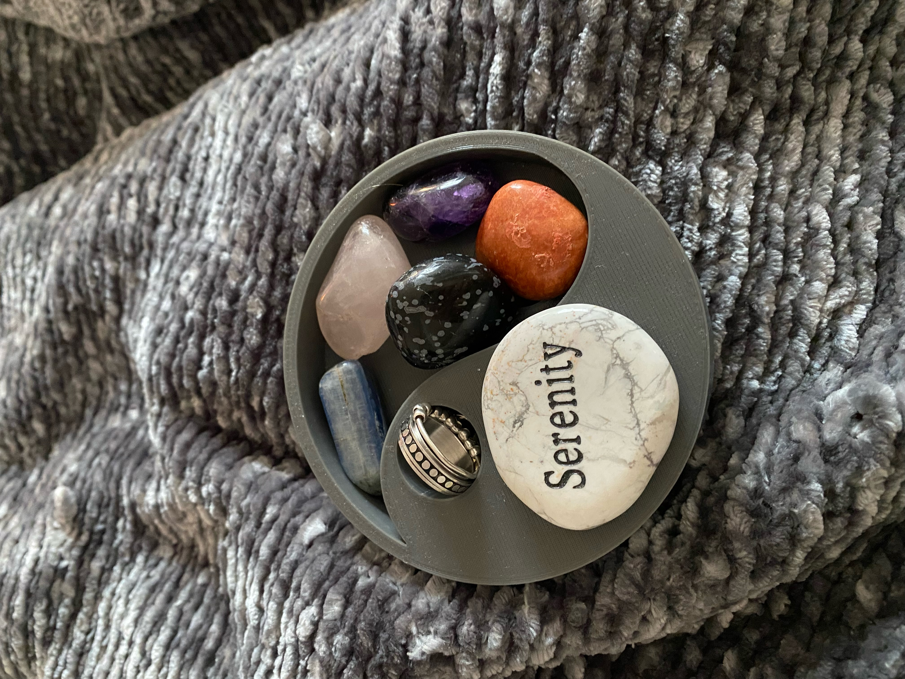
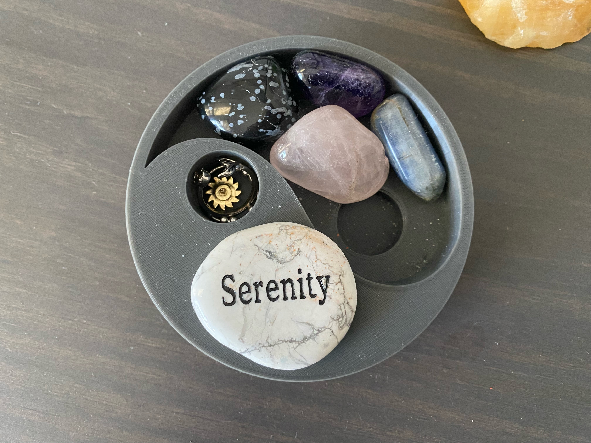

Yin and Yang Gem/Ring Holder
This was a simple assignment that only required us to design something with a certain amount of cuts and extrusions. I decided to make myself a little gem stone/ ring holder, as all of my stones were just freely chilling on my nightstand. I put my rings in the top hole most of the time but they can fit in the bottom one as well. I still use it today!


